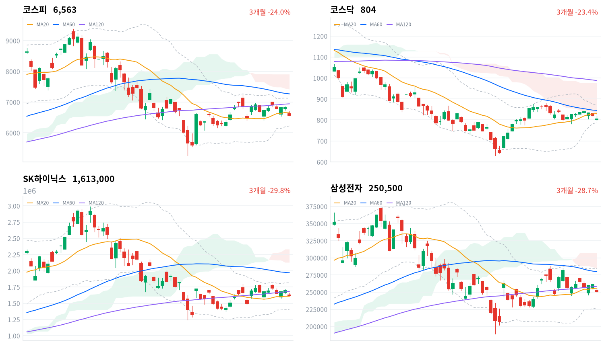
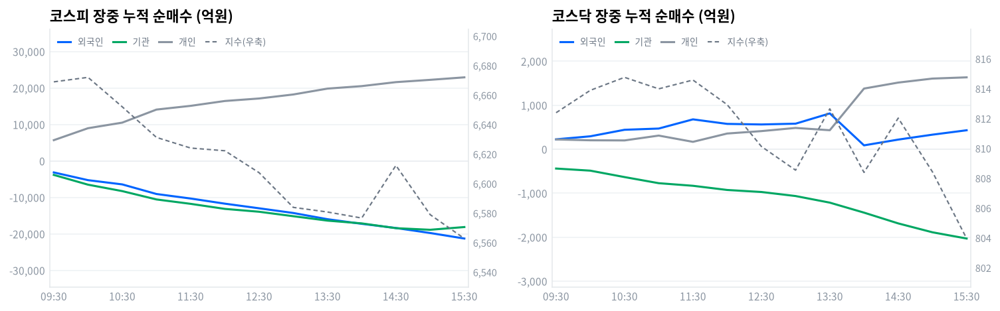

코스피는 오늘 3.99% 내려 6,562.72로 마감했다. 호르무즈 해협에서 재점화된 미·이란 무력충돌로 유가가 급등했고, 미 국채 금리 급등과 반도체 투심 위축이 겹쳤다.
외국인과 기관이 코스피에서 각각 1조9,173억원, 2조361억원을 순매도했다(당일 잠정). 개인이 2조3,029억원을 순매수하며 낙폭 일부를 흡수했지만, 60개 업종 중 항공사만 올랐다.
코스피는 오늘 3.99% 내려 6,563으로, 코스닥은 2.1% 내려 804로 마감했다. 호르무즈 해협에서 미·이란 무력충돌이 재점화하며 유가가 급등했고, 밤사이 미 국채 금리까지 크게 튀어 올랐다.
이 조합이 국내 반도체 대형주로 곧장 전이됐다. 필라델피아반도체지수가 밤사이 2.14% 내렸고 마이크론 등 미국 메모리주가 일제히 약세였는데, 오늘 거래대금 1·2위인 SK하이닉스·삼성전자가 외국인·기관 매도의 집중 표적이 됐다. 항공사를 뺀 59개 업종이 모두 내리며 낙폭이 시장 전반에 고르게 퍼졌다.
위험 노출은 다음 세션까지 축소한다. 반도체 대형주가 매도 표적이 된 채 59개 업종이 함께 내린 것은 오늘 낙폭이 특정 업종에 국한되지 않았다는 뜻이다. 외국인과 기관이 코스피에서 각각 1조9,173억원, 2조361억원을 순매도했다(당일 잠정). 호르무즈 리스크가 다음 세션에도 이어지면 매도 압력이 되풀이될 가능성이 크다.
이 판단을 다시 볼 조건은 둘이다. 코스피가 20일 이동평균(6,672)을 다시 회복하면 오늘의 급락이 일시적 리스크오프로 끝났다는 뜻이라 노출을 다시 늘릴 근거가 된다. 반대로 외국인이 코스피에서 순매수로 돌아서거나 국제유가가 진정되면, 오늘 매도 압력을 만든 두 축 가운데 하나가 풀렸다는 뜻이라 마찬가지로 판단을 재검토할 시점이다.
전일(9월1일) 미국 증시는 3대 지수가 모두 내렸다. 다우가 0.79%, S&P500이 0.71%, 나스닥이 1.03% 하락했다.
같은 시간대 아시아도 대부분 내려 닛케이가 -2.85%, 대만가권이 -1.67%, 상해종합이 -0.97%로 밀렸고 항셍만 -0.07%로 낙폭이 작았다. 아시아 평균은 -1.39%였는데 코스피(-3.99%)는 이보다 2.6%포인트 더 크게 밀려 역내에서 유독 부진했다.
한국 정규장이 열린 시간대 미국 선물은 E-mini S&P500이 0.04%, 나스닥 선물이 0.17% 내리며 완만한 약세를 이어갔다. 코스피는 전일 종가(6,836)보다 낮은 6,625에서 출발해 갭다운 폭이 3.08%에 달했다.
코스피는 오전 9시 6,640에서 출발해 오전 10시 6,672까지 오르며 이 시각까지의 고점을 만들었다. 이후 매도세가 짙어지며 오후 2시 6,577까지 밀렸고, 오후 2시반 6,612까지 잠시 반등했지만 되밀리며 낮은 자리에서 정규장을 마쳤다.
코스닥은 801에서 출발해 오전 10시반 815 부근까지 오르며 고점권을 만들었다. 이후 808~813 사이에서 방향을 잡지 못하다가 마감 무렵 다시 밀리며 804로 정규장을 마쳤다.
원/달러 환율은 오전 9시 1,374원으로 하루 중 가장 높았다가 오후 3시 1,366원까지 내렸고, 1,368원으로 정규장을 마쳤다. 코스피가 4% 가까이 급락한 날에도 원화가 오히려 강세 쪽으로 움직인 것은 눈에 띄는 대목이다.
오늘을 만든 것은 두 갈래다. 하나는 호르무즈 해협에서 재점화된 미·이란 무력충돌로 유가가 급등하며 위험자산 회피가 번진 것이고, 다른 하나는 미 국채 금리 급등과 필라델피아반도체지수 약세가 국내 대형 기술주로 전이된 것이다. 거래대금 1·2위인 SK하이닉스·삼성전자가 오늘 외국인·기관 매도의 집중 표적이 됐다.
코스피는 오늘 3.99% 내려 6,563으로 마감하며 273포인트를 반납했는데, 이는 최근 흐름에서도 두드러지는 낙폭이다. 20거래일 저점(6,159)보다는 6.6% 높은 자리다. 20거래일 고점(7,217)과 비교하면 9.1% 낮아, 최근 한 달 상단권과는 아직 거리가 있다.
장중 고가(6,695)와 저가(6,558) 사이 폭은 136포인트(2.08%)로, 낙폭 자체보다도 하루 변동성이 두드러졌다. 종가는 저가(6,558)에서 불과 4포인트 위였다 — 낙폭을 만회하지 못한 채 저점권에서 정규장을 마친 셈이다.
| 지수 | 종가 | 등락률 | 시가 | 고가 | 저가 | 전일 종가 |
|---|---|---|---|---|---|---|
| 코스피 | 6,562.72 | -3.99% | 6,625.47 | 6,694.57 | 6,558.30 | 6,835.80 |
| 코스닥 | 803.98 | -2.10% | 802.80 | 819.62 | 796.34 | 821.25 |
전일 종가(6,836)보다 낮은 6,625에서 출발한 코스피는 오전 9시 6,640을 거쳐 오전 10시께 이 시각까지의 고점을 만들며 반등했다.
이후 코스피는 매도세가 짙어지며 낮 12시 6,622까지 밀렸고, 오후 1시 6,584까지 낙폭을 다시 키웠다.
오후 2시 6,577까지 한 차례 더 밀린 뒤 2시반 6,612까지 잠시 반등했지만, 코스피는 되밀리며 낮은 자리에서 정규장을 마쳤다.
코스닥은 802에서 출발해 오전 10시반 815 부근까지 오르며 이날 고점권을 만들었다.
이후 코스닥은 808~813 사이에서 방향을 못 잡다가 마감 무렵 다시 밀리며 낮은 자리에서 정규장을 마쳤다. 촉매는 호르무즈 해협에서 재점화된 미·이란 무력충돌과 유가 급등, 그리고 미 금리·필라델피아반도체지수 약세가 국내 기술주로 전이된 점이다.

코스피·코스닥·SK하이닉스·삼성전자 3개월 일봉에 이동평균(20·60·120)·볼린저밴드·일목균형표 구름대를 오버레이했다. 상승 캔들은 녹색, 하락 캔들은 적색으로 표시된다.
코스피(6,563)는 20일 이동평균(6,672)과 일목 기준선(6,240) 사이에서 마감해 이동평균 정배열이 무너진 혼조 구간에 놓여 있다. 위로 벗어나면 120일 이동평균(6,943)이 다음 저항이고, 기준선 아래로 밀리면 20일 저점(6,159)까지 지지가 비어 있다.
코스닥(804)은 일목 전환선(811)을 바로 위 저항, 20일 저점(777)을 아래쪽 지지로 두고 마감했다. 전환선을 넘어서면 20일 이동평균(830)이 다음 저항이고, 저점이 무너지면 기준선(755)까지 지지가 빈다.
SK하이닉스(161만원)는 20일 이동평균(161만원)을 딛고 일목 전환선(167만원)을 바로 위 저항으로 두고 마감했다. 전환선을 넘어서면 반등 폭을 키울 수 있고, 이동평균이 무너지면 기준선(152만원)까지 지지가 빈다.
삼성전자(25.1만원)는 일목 기준선(23.9만원)을 지지 삼아 20일 이동평균(25.6만원)을 바로 위 저항으로 두고 마감했다. 이동평균을 넘어서면 전환선(26.5만원)까지 반등 여지가 있고, 기준선이 무너지면 20일 저점(22.8만원)까지 지지가 빈다.
위 레벨은 일목균형표와 스윙 고저를 기계적으로 계산한 값이며 투자 권유가 아니다.
| 주체 | 순매수(억원) |
|---|---|
| 개인 | +23,029 |
| 외국인 | -19,173 |
| 기관 | -20,361 |
| 주체 | 순매수(억원) |
|---|---|
| 개인 | +1,727 |
| 외국인 | +618 |
| 기관 | -2,322 |
코스피에서는 외국인과 기관이 나란히 대규모로 팔았다. 매도 규모는 기관이 외국인보다 더 컸다(당일 잠정).
개인은 2조3,029억원을 순매수하며 낙폭 일부를 흡수했지만, 외국인·기관 순매도 합계(3조9,534억원)에는 크게 못 미쳤다.
코스닥에서는 개인과 외국인이 함께 사고 기관만 팔았다(당일 잠정). 그런데도 지수는 2.1% 내렸다 — 매수 주체가 있다고 낙폭이 막히지는 않았다.

누적 순매수(억원), 정규장 09:30~15:30 30분 앵커 기준. 지수는 우측 축.
| 시각 | 코스피(억원) | 코스닥(억원) | ||||
|---|---|---|---|---|---|---|
| 개인 | 외국인 | 기관 | 개인 | 외국인 | 기관 | |
| 09:30 | +5,685 | -3,162 | -3,842 | +220 | +223 | -441 |
| 10:00 | +8,962 | -5,280 | -6,519 | +201 | +292 | -489 |
| 10:30 | +10,493 | -6,442 | -8,283 | +198 | +440 | -635 |
| 11:00 | +14,072 | -9,074 | -10,567 | +308 | +468 | -774 |
| 11:30 | +15,095 | -10,316 | -11,775 | +166 | +677 | -833 |
| 12:00 | +16,425 | -11,725 | -13,157 | +355 | +574 | -928 |
| 12:30 | +17,111 | -12,993 | -13,942 | +410 | +561 | -974 |
| 13:00 | +18,211 | -14,281 | -15,164 | +482 | +579 | -1,066 |
| 13:30 | +19,819 | -15,985 | -16,377 | +430 | +812 | -1,216 |
| 14:00 | +20,505 | -17,251 | -17,135 | +1,377 | +86 | -1,443 |
| 14:30 | +21,595 | -18,399 | -18,446 | +1,513 | +217 | -1,688 |
| 15:00 | +22,223 | -19,770 | -18,884 | +1,604 | +329 | -1,890 |
| 15:30 | +22,908 | -21,285 | -18,137 | +1,632 | +429 | -2,032 |
코스피 외국인 누적 순매도는 하루 종일 한 방향으로만 커졌다(전환 없음). 정규장 마지막 관측에서 2조1,285억원까지 불어났는데, 같은 시각 지수는 낮 이후 완만하게 밀리고 있어 방향은 대체로 일치했다. 다만 오후 2시반 지수가 6,612로 잠시 반등한 순간에도 외국인 매도(1조8,399억원)는 오히려 커지고 있어, 그 반등을 외국인이 만든 것은 아니다.
기관 내부를 나누면 성격이 갈린다. 선물·프로그램 연계 매매인 금융투자가 정규장 마지막 관측에서 1조4,215억원 순매도로 기관 전체 매도(1조8,137억원)의 78%를 차지했다. 정책성 장기자금인 연기금등은 1,165억원 순매도에 그쳐, 오늘 기관 매도의 중심은 금융투자였다.
코스닥 기관도 금융투자가 정규장 마지막 관측 순매도(2,032억원)의 70%(1,414억원)를 차지했다. 다만 코스피와 달리 이 매도는 일별 확정 프로그램 매매에서는 거의 나타나지 않는다 — 코스닥 기관 매도는 프로그램 밖에서 더 많이 나왔다는 얘기다.
정규장 마지막 관측에서 당일 잠정 집계로 넘어가며, 코스피 외국인 순매도는 2조1,285억원에서 1조9,173억원으로 줄었지만 기관은 1조8,137억원에서 2조361억원으로 오히려 늘었다. 코스닥은 외국인이 429억원에서 618억원 순매수로 매수를 더 키웠고, 기관은 2,032억원에서 2,322억원 순매도로 매도를 늘렸다. 다음 거래일에는 외국인 순매도가 이어지는지, 유가·금리발 리스크오프가 진정되는지를 함께 봐야 한다.
| 시장 | 차익 순매수(억원) | 비차익 순매수(억원) | 전체 순매수(억원) |
|---|---|---|---|
| 코스피 | -440 | -14,700 | -15,140 |
| 코스닥 | -15 | +22 | +7 |
코스피 프로그램 매매는 비차익이 1조4,700억원 순매도로 전체(1조5,140억원)의 대부분을 이끌었다(당일 잠정). 방향성 바스켓인 비차익이 이 정도로 컸다는 것은 기관이 선물이 아니라 현물 자체를 대거 팔았다는 신호다.
차익은 440억원 순매도에 그쳐 선물 연계 기계적 매매의 비중은 크지 않았다. 코스피 기관 전체 순매도(당일 잠정)와 비교하면 프로그램이 매도의 상당 부분을 설명한다.
코스닥 프로그램은 차익·비차익 모두 미미해 전체 순매수가 7억원에 그쳤다(당일 잠정). 코스닥 기관의 확정 순매도(2,322억원, 당일 잠정)와 견주면, 코스닥 매도는 프로그램이 아니라 다른 경로에서 나왔다는 뜻이다.
| 순위 | 종목/ETF | 구분 | 거래대금 | 비고 |
|---|---|---|---|---|
| 1 | SK하이닉스 | 개별주 | 4.13조원 | - |
| 2 | 삼성전자 | 개별주 | 3.82조원 | - |
| 3 | 반도체 테마 ETF | 테마·롱 | 0.85조원 | 6종 합산 |
| 4 | 금호건설 | 개별주 | 0.35조원 | - |
| 5 | 삼성전자우 | 개별주 | 0.35조원 | - |
| 6 | SK하이닉스 레버리지 | 레버리지·롱 | 0.28조원 | 2종 합산 |
| 7 | 2차전지 테마 ETF | 테마·롱 | 0.24조원 | 5종 합산 |
| 8 | KODEX 200타겟위클리커버드콜 | ETF | 0.18조원 | - |
| 9 | 신한지주 | 개별주 | 0.17조원 | - |
| 10 | 두산에너빌리티 | 개별주 | 0.15조원 | - |
단위 백만원 원본을 조 단위로 환산. 같은 기초자산 ETF는 방향별로, 같은 테마 섹터 ETF는 테마별로 묶었으며 코스피200·코스닥150 추종 지수 ETF 및 그 레버리지·인버스, 해외 ETF는 제외했다.
개별 반도체 3종목(SK하이닉스·삼성전자·삼성전자우) 합산 거래대금은 8.30조원으로, 반도체 테마 ETF 6종을 합친 0.85조원의 9.8배에 이른다. 급락장에서도 자금은 바스켓이 아니라 개별 종목에 직접 몰렸다.
SK하이닉스 레버리지(0.28조원, 2종 합산)는 거래대금 상위 10위 안에 들었지만 인버스는 이름을 올리지 못했다. 지수가 4% 가까이 급락한 날에도 개인 자금 일부는 반등 베팅 쪽으로 향했다는 뜻이다.
2차전지 테마 ETF(0.24조원, 5종 합산)와 금호건설(0.35조원)·삼성전자우(0.35조원)가 뒤를 이었다. KODEX 200타겟위클리커버드콜은 0.18조원으로 그다음이었다. 신한지주(0.17조원)·두산에너빌리티(0.15조원)가 10위권을 채웠지만, 오늘 자로 확인되는 개별 재료는 없다.
하루 기준으로는 항공사만 올랐다. 나머지 59개 업종은 모두 내렸는데, 게임엔터테인먼트(-3.29%)·생명과학도구및서비스(-3.23%)·양방향미디어와서비스(-3.13%)가 낙폭 상위권이었다.
항공사는 9개 종목 중 3개만 올랐지만, 유동성 상위 종목이 함께 올라 데이터 크로스체크에서는 폭넓은 상승 주도로 판정됐다.
반대로 무선통신서비스·건강관리기술·무역회사와판매업체·게임엔터테인먼트처럼 오른 종목이 거의 없는 업종은 사실상 전 종목이 내려, 하락이 업종 전반에 고르게 퍼졌다.
반면 포장재·부동산처럼 오른 종목이 전체의 40% 안팎이던 업종은 하락 속에서도 상당수 종목이 버텼다. 지수 급락이 업종 안에서까지 균일하지는 않았다는 뜻이다.
SK하이닉스(161만원)·삼성전자(25.1만원)는 오늘 거래대금 1·2위를 나란히 차지하며 매도의 집중 표적이 됐다. 아주경제는 두 종목이 중동 리스크 재점화 여파로 2%대 하락했다고 전했다.
한국경제는 삼성전자·SK하이닉스가 유가·금리·중국 HBM 경쟁이라는 세 겹 악재에 눌렸다고 전했다.
항공사 업종은 60개 업종 중 유일하게 올랐다. 다만 이 상승을 유가·지정학 리스크와 직접 잇는 근거는 확인되지 않아, 개별 재료로 추정할 뿐 단정하지 않는다.
거래대금 상위에는 SK하이닉스 레버리지(0.28조원)·금호건설(0.35조원)도 이름을 올렸다. 두 종목 모두 오늘 자로 확인되는 개별 신규 재료는 없어, 최근 흐름의 연장선으로 보는 편이 합리적이다.
국고채 10년물은 오늘 4.418%로 마감해 전일보다 4.7bp 올랐다. 3년물도 3.930%로 5.2bp 올라, 단기물 금리가 장기물보다 더 크게 뛰었다. 원/달러 환율은 아침 1,374원까지 올랐다가 낮 1,366원까지 내렸고 1,368원으로 마쳤는데, 코스피가 4% 급락한 날에도 원화는 오히려 하루 종일 강세 쪽으로 움직였다.
| 지표 | 금리 | 전일比(bp) | 기준일 |
|---|---|---|---|
| 국고채 3년 | 3.930% | +5.2 | 2026-09-02 |
| 국고채 10년 | 4.418% | +4.7 | 2026-09-02 |
| CD 91일 | 3.120% | 0.0 | 2026-09-02 |
| 회사채 AA- 3년 | 4.600% | +5.1 | 2026-09-02 |
| 한국은행 기준금리 | 3.00% | +25.0(전월比) | 2026-08 |
장기물과 단기물의 금리차(10년-3년)는 48.8bp로 전일 49.3bp보다 소폭 좁혀졌다. 단기물이 장기물보다 더 크게 오른 결과라, 방향은 완만한 베어 플래트닝이다.
회사채 AA- 3년물과 국고채 3년물의 신용 스프레드는 67.0bp로 전일 67.1bp와 거의 같았다. 금리가 전반적으로 오른 가운데서도 신용 스프레드는 안정적이었던 셈이다.
CD 91일물은 3.120%로 전일과 변화가 없었다. 국채·회사채 금리가 나란히 오른 것과 달리 단기 지표금리만 멈춰 서 있어, 오늘 금리 상승은 통화정책보다 유가·물가 경계심 쪽에 더 가까워 보인다.
국고채 3년물(3.930%)은 기준금리(3.00%)보다 93bp 높은 자리다. 채권시장이 추가 긴축이나 물가 프리미엄을 어느 정도 선반영하고 있다는 뜻으로 읽을 수 있다.
외국인이 코스피에서 크게 순매도한 날 원화가 오히려 강세 쪽으로 움직인 것은 통상적인 위험회피 패턴과는 다르다. 주식시장의 매도 압력이 외환시장으로 크게 번지지는 않은 하루였다.
미군이 약 한 달 만에 호르무즈 해협 인근 이란 라라크섬의 로켓 발사대 두 곳을 다시 공습했다고 이투데이가 전했다. 미 중부사령부는 이란 혁명수비대(IRGC)가 해상기뢰 탑재 로켓을 발사할 준비를 하는 것을 포착해 타격했다고 밝혔다. 이란이 즉각 맞대응하면서 지난 6월 맺은 종전 양해각서(MOU) 이후 소강상태였던 군사 긴장이 다시 불거졌다.
호르무즈 해협은 전 세계 원유·LNG 해상물동량의 약 20%가 지나는 길목이라, 군사 충돌이 유가에 곧바로 반영된다. 이번에도 WTI가 90달러에 육박하며 연초 대비 45% 올랐고, 간밤 뉴욕증시가 이 소식에 위험자산을 피하며 급락한 여진이 아시아 개장으로 이어졌다.
유가 급등은 통상 항공유 비용 부담으로 항공주에 악재이지만, 오늘 코스피에서는 항공사 업종만 유일하게 올랐다(+3.07%). 이 상승을 지정학 리스크와 직접 잇는 근거는 확인되지 않아 개별 종목 재료로 추정할 뿐 단정하지 않는다. 반대로 원유를 많이 쓰는 철강(-2.81%)·비철금속(-2.80%) 업종은 유가 부담과 방향이 맞게 내렸다.
미·이란 통행료 협상과 MOU 이행 여부, 호르무즈 봉쇄 지속 여부, 유가의 90달러대 안착 여부가 다음 확인 지점이다. 구체적인 협상 일정은 확인되지 않아 일정은 미확정이다.
중동 리스크로 미 국채 10년물 금리가 19개월래 최고 수준까지 급등했고, 9월 FOMC 25bp 인상 확률이 68.2%까지 올랐다고 전해졌다. 같은 밤 필라델피아반도체지수가 2.14% 내렸고, 마이크론(-2.64%)·샌디스크(-1.90%)·시게이트(-1.42%) 등 메모리·반도체주가 일제히 약세였다.
금리 급등은 할인율을 높여 성장주 밸류에이션을 압박하고, 미 반도체주 약세는 투자 심리를 타고 국내 대형 기술주로 곧장 옮겨붙는다.
오늘 거래대금 1·2위인 SK하이닉스·삼성전자가 외국인·기관 매도의 집중 표적이 됐다. 코스피에서 외국인이 1조9,173억원, 기관이 2조361억원을 순매도했다(당일 잠정). 직접적인 수혜 업종은 확인되지 않았고, 개인 순매수(2조3,029억원)가 낙폭을 일부 흡수하는 데 그쳤다.
9월 FOMC 회의 성명과 미국 CPI·고용지표가 다음 확인 지점이다. 정확한 FOMC 일자는 확인되지 않아 일정은 미확정이다.
한국은행 ECOS 통계에 8월 기준금리가 2.75%에서 3.00%로 25bp 오른 것이 반영됐다.
정책금리 인상은 할인율 경로를 거쳐 국채·회사채 금리에 상방 압력을 주고, 밸류에이션이 높은 성장주를 더 크게 압박한다.
오늘 국고채 3년물이 5.2bp, 10년물이 4.7bp 각각 올랐고 코스닥(-2.1%)도 크게 내렸다. 다만 오늘 낙폭의 직접 원인은 중동발 리스크오프와 미 반도체 투심 위축이 훨씬 크고, 8월에 이미 알려진 기준금리 인상은 오늘 하락을 새로 설명하지 못한다.
다음 금융통화위원회 통화정책방향 결정회의 일정은 확인되지 않아 일정은 미확정이다.